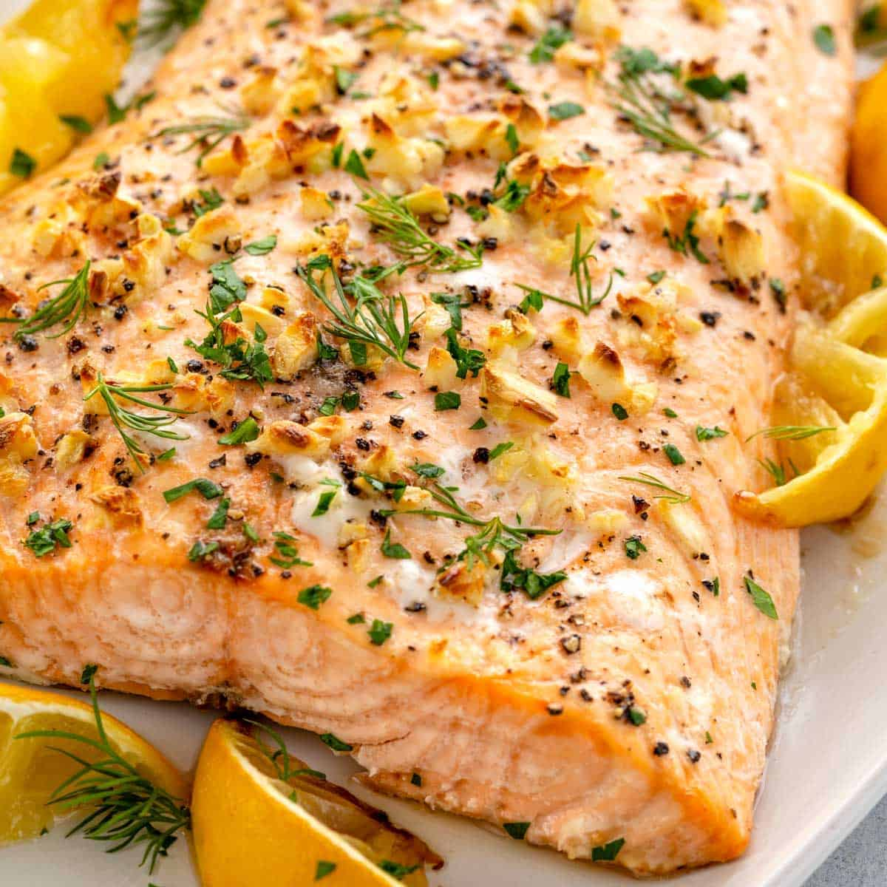

Baked Salmon

Description
Ingredients
- 1 serving cooking spray
- 2 pound salmon fillet
- 2 tablespoons mayonnaise
- 2 tablespoons seafood seasoning
Steps
- Preheat the oven to 350 degrees F (175 degrees C). Line a large baking sheet with aluminum foil and spray with cooking spray.
- Place salmon on the prepared baking sheet. Spread with mayonnaise and sprinkle with Old Bay® seasoning.
- Bake in preheated oven until fish flakes easily with a fork, about 20 minutes.